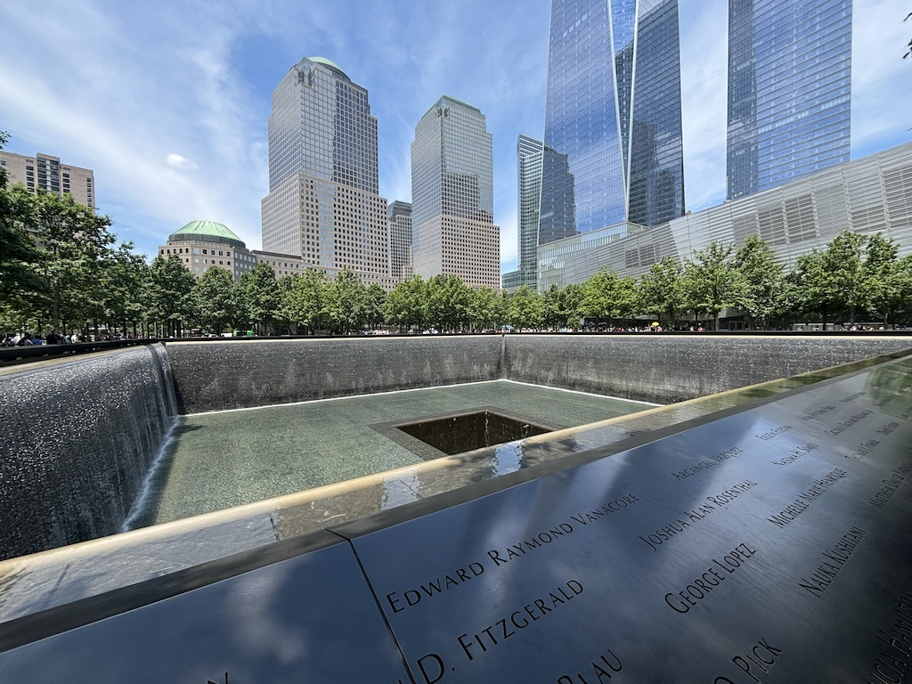
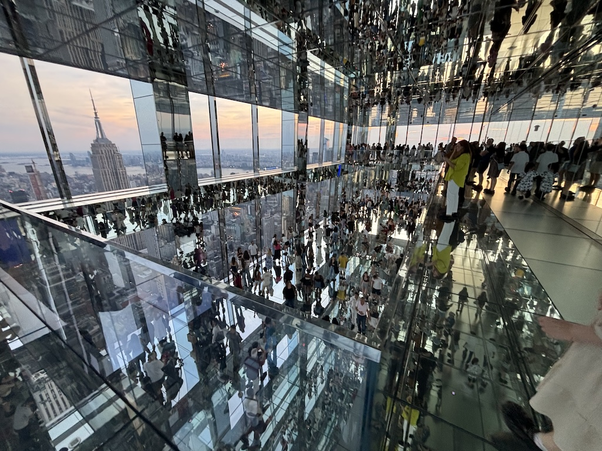

20th to 25th June 2024
Note that for privacy reasons the names in this article have been changed.
Welcome again. In this edition I'm in the most populous city in America, New York! This section of my trip was split between reconnecting with someone from my university days now living out in the big apple and the beginning of my week in America with my sister.
After arriving at my friends (we'll call him Adrian) flat in Williamsburg, Brooklyn he tells me there's a plan to go for some drinks. We head to a spot called Westlight - a free entry rooftop bar. It was an incredible spot, with a perfect view of Manhattan.

We stayed for a good hour or so, picking the time we went to see the sun set and the city light up. Agreeing to get a round in each, I bought 2 drinks halfway through our time there. I planned to just pay for the drinks on my debit and just ignore my phone notifications clearly stating the price but it didn't work. I looked at my lock screen and saw $28 had been taken. We're not even talking cocktails, just 2 300 or so milliliter IPAs. At least they were served in a real glass.

The next day Adrian showed me an Italian place near his that he's been enjoying recently. It's called Forma and was very very good. Accompanied with complementary traditional flat bread, my shrimp pasta was delicious. I thought their logo was good so here's a photo of it - if you visit Brooklyn I'd highly recommend you check it out.
That afternoon we head to Prospect Park in south Brooklyn to see a free gig. Or at least a gig is what I thought it was going to be. This event, that happens most years in this part, is like a full blown festival. Bars, food stations and a fully kitted out stage is set up and unbelievably the whole thing is free. The music was a mixture of different genres and styles, I think the angle was "up and coming bands".

As you can see the view from where we sat wasn't the best as it was already so busy when we arrived. But the music was good and the people friendly and chatty.

Later on a storm came through so we left early. It's a good thing we did too as the whole event was cancelled due to the weather shortly after we exited the park. It really did look like lightning was only a few blocks away.
Sunday I had a bit of a chill day and mostly spent my time catching up on stuff online. The main thing I did within this day was go for a run around central park, so here are some photos from that run.
Central park has an area called The Great Lawn, and it includes baseball fields!
This parked speed checker I thought was quite cool. Uses a digital sign to tell you your speed but then a flip board for the current speed limit. I just thought it was neat.

This fountain by the lake is very pretty and I'm sure recognized by many of you readers. I think When Harry Met Sally has a scene at the restaurant that's to the right of this picture. At least according to my sister. I imagine there's a ton of different snippets of shows shot around the lake as it's such a nice spot.
And finally here's a shot of the south exit of the park. Through the center is this sort of bike highway where lots of cyclists and tuk-tuks ride through and this is where it starts. This also captures how absolutely massive the skyscrapers are that border the park.

Day three, and at this point I began to do a lot of the more tourist and landmark oriented spots. It's also the first day my sister joins me for a section of my trip!
We visited Grand Central station first. I came here when I was a kid, but somehow forgot the beautiful green ceiling that sits way above all the commuters. It is and probably will be the most grand train station hall I visit on this trip. It's just magnificent.

Next we headed to the New York Public Library. By pure luck we were there at 10am, just as they were opening to the public, and were lucky enough to be there for the 1 hour window they open the Rose Reading room to the public. I assume this is so the real academics using the library for studies aren't disturbed all day by us tourists. It's a beautiful room, if you ever visit the library go in the morning and see it.
Also apparently the library holds the stuffed toys that inspired Winnie the Pooh.
Next was the Rockerfeller center. As it's pride month they were flying Pride flags, installed Pride walkways and had specific Pride month events on. We went inside for a coffee but I also picked up a bagel Pride pin for a dollar.

We found this church on 5th avenue which to me looked really out of place in between all the other modern architecture. After visiting inside we found out this is St Patricks Cathedral, built back in 1879! For American standards I'm learning that's ancient.

Heading west to see the Hudson river we came across this small park with some lime green overpasses. With the white and brown buildings in the background and baseball field at the front I like how this photo framed up.

We ended the day going to Times Square, eating at Juniors for dinner. After being recommended to go to one to try the cheesecake, we accidentally filled up on the mains we ordered and didn't have space to enjoy cheesecake too.

It's the final day now and we're exploring a bit of Brooklyn and Downtown Manhattan. Starting with Dumbo, which stands for Down Under the Manhattan Bridge Overpass.

It's a very cool area with a nice large park that can see over to Manhattan and lots of nice shops, bars, cafes and restaurants. Felt a lot less touristy so may have been an off the beaten track recommendation from my New York based friend.

The Brooklyn bridge has a central walkway suspended above the road. Although it's still loud and fairly polluted from the road it's surprisingly nice to walk along. And it seems a popular thing to do as there were a lot of people about enjoying the walk with us.

Initially we headed to the southern most tip to see the statue of liberty, but thanks to a monumental amount of construction work we were unable to see anything. The only views were within the paid entry boat tour area or a very expensive restaurant.
Instead we headed north, visiting the site of the twin towers disaster. One of the pools was dry today, not running the water that you can see in the photo below. It's a very moving place to be.
As we were walking past it my sister and I picked a place to visit each en route to the Vanderbilt (where we had a ticket to go to the top!). She picked the friends flat, and I picked the ghost busters building. It wasn't very impressive or interesting, probably wouldn't recommend it unless you're literally walking past it.

On our way north we also went along the highline. This was an awesome space - an old abandoned overground rail converted into a park suspended above the road. It's really quite a cool idea and something I wish we had in more uk cities.

Some of the architecture overlooking the highline is really interesting. Check out the use of colours and shape on these apartment blocks.
At the end of the high line is a park with this feature in the center. I went up to the entrance hoping to climb it but was turned away by the security guard saying it has been closed for a while. Apparently someone committed suicide off the top.

We grabbed some food and then headed to the Vanderbilt building - one of the tallest buildings in Manhattan. They have this bookable experience called the Summit 1 Vanderbilt which was recommended to me. It was totally worth it, the whole thing was awesome. Rooms with mirrors, art installations and silver balloons were on the walk up the 3 stories, with each room hosting an incredible view of the skyline.
As Adrian advised us we booked a sunset ticket so got to see the skyline both in the day time and at night. Here's the view at dusk shortly before we headed home. We sat here for a good 45 minutes just watching all the lights turn on.

And that's it for New York. Next is Boston, see you then.
Navigate home